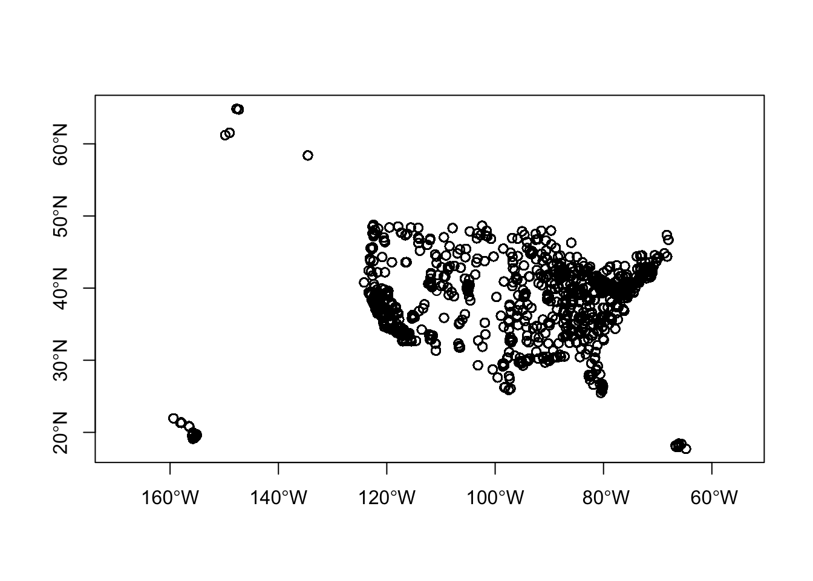
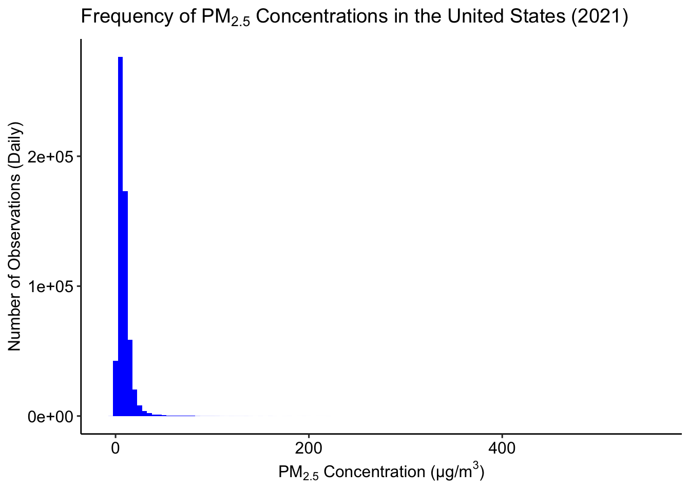
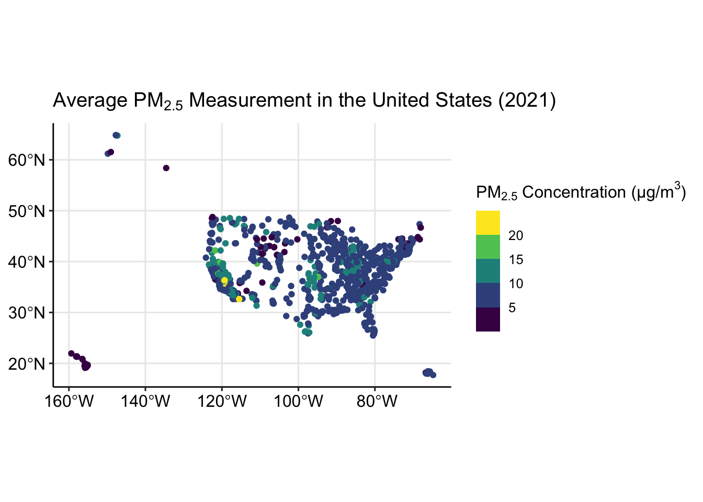
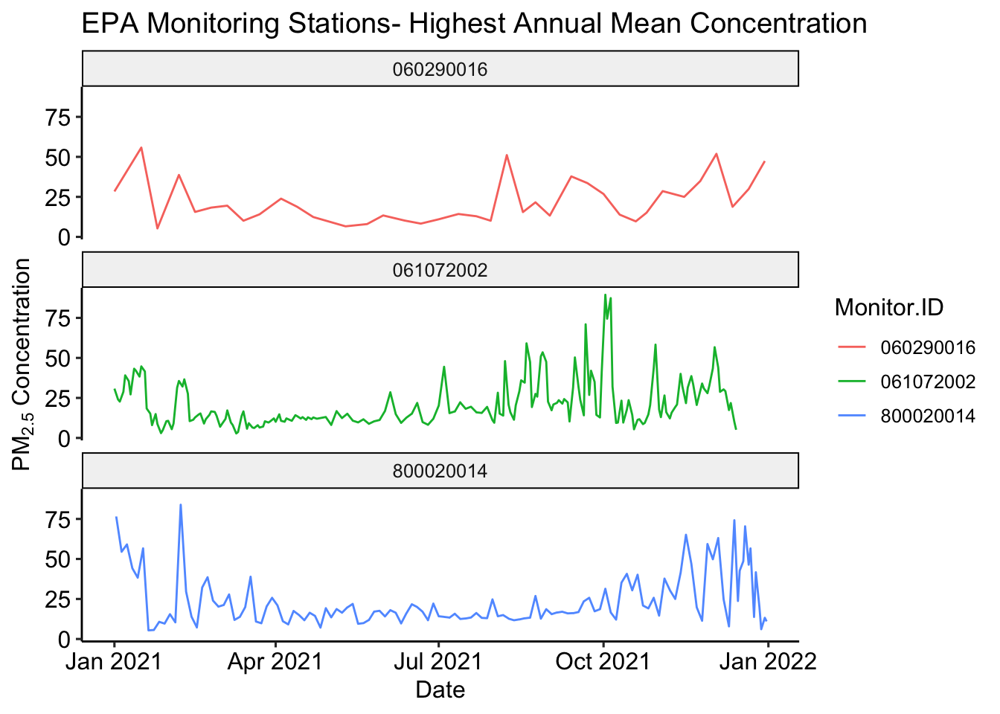
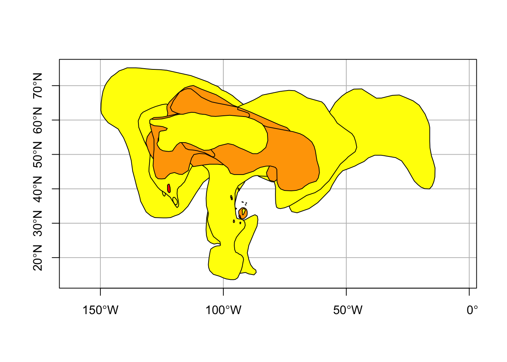
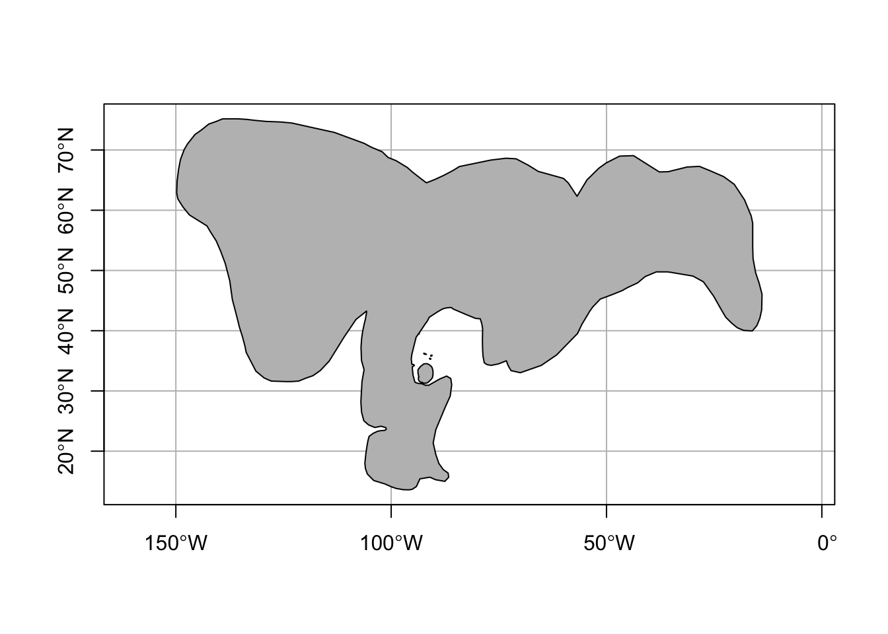

# may require R to restart
vignette_packages <- c("sf","terra", "ggplot2", "ggpubr",
"dplyr", "sftime", "stars")
for(v in 1:length(vignette_packages)){
if (vignette_packages[v] %in% installed.packages() == FALSE){
install.packages(vignette_packages[v])
}
}
library(sf); library(sftime); library(stars); library(terra);
library(dplyr); library(ggplot2); library(ggpubr)Intro-Environmental-Spatial-Analysis
Introduction to Spatial Analysis with Environmental Data
Environmental research relies on various types of spatial, temporal, and spatio-temporal data to accurately measure, predict, and model exposures.
This vignette will introduce packages equipped to handle the various types of data often used in environmental research, will teach how to load/read each type of data into R, and how to perform simple/basic/primary analyses.
This vignette utilizes several packages that may not be installed in [your current environment]. To begin, install all uninstalled packages and load [them] into the [current environment]
1. Spatial Data
Various types of spatial data are [essential] for conducting environmental health research. The most common forms of spatial data are point, polygon, and raster data types, [each of which will be covered in this vignette.]
1.1 Point Data
The sf package [is designed to/allows users to] create, access, manipulate, and analyze [simple features]. When working with spatial data, it is important to note that the point and polygon data types can be classified as simple features. A detailed description of [what constitutes] simple features and simple feature data is available on 1. Simple Features for R(Warning: this webpage links to an external cite).
To demonstrate handling point type data with sf, we will use PM2.5 monitoring data from 2021, obtained from the United States Environmental Protection Agency’s Pre-Generated Data Files. The data can be downloaded at https://aqs.epa.gov/aqsweb/airdata/daily_88101_2021.zip, or using the following code.
# specify the URL where data is stored
url_epa <- "https://aqs.epa.gov/aqsweb/airdata/daily_88101_2021.zip"
# specify where to save downloaded data
destination_epa <- "/ YOUR FILE PATH /epa_data.zip"
# download the data
download.file(url_epa,
destination_epa)Once the file has finished downloading, open epa_data.zip with unzip().
unzip("/ YOUR FILE PATH /epa_data.zip")After the file has been unzipped, identify the name of the PM2.5 monitoring data and import the data set.
list.files("/ YOUR FILE PATH /") [1] "cb_2018_us_state_500k.cpg"
[2] "cb_2018_us_state_500k.dbf"
[3] "cb_2018_us_state_500k.prj"
[4] "cb_2018_us_state_500k.shp"
[5] "cb_2018_us_state_500k.shp.ea.iso.xml"
[6] "cb_2018_us_state_500k.shp.iso.xml"
[7] "cb_2018_us_state_500k.shx"
[8] "daily_88101_2021.csv"
[9] "epa_data.zip"
[10] "hms_smoke20230901.dbf"
[11] "hms_smoke20230901.prj"
[12] "hms_smoke20230901.shp"
[13] "hms_smoke20230901.shx"
[14] "noaa_smoke20230901.zip"
[15] "states.zip" pm <- st_read("/ YOUR FILE PATH /daily_88101_2021.csv")Warning: no simple feature geometries present: returning a data.frame or tbl_dfImporting a .csv file with sf::st_read() may return a warning. This warning informs the user that the data does not contain a simple feature geometry, so the data was imported as a data.frame.
It is important to inspect the data and see the data types of each column, especially the parameters of interest. The outcome of interest for these exploratory analyses is daily mean PM2.5 concentration measurement ($Arithmetic.Mean), and we will also need identification information for each monitor and measurement ($State.Code, $County.Code, $Site.Num, $Latitude, $Longitude, State.Name, and $Date.Local). To limit the processing time associated with a large data set, reduce the data to only the parameters of interest and inspect the data type of each.
pm <- subset(pm, select=c(State.Code,
County.Code,
Site.Num,
Latitude,
Longitude,
State.Name,
Date.Local,
Arithmetic.Mean))
summary(pm) State.Code County.Code Site.Num Latitude
Length:590208 Length:590208 Length:590208 Length:590208
Class :character Class :character Class :character Class :character
Mode :character Mode :character Mode :character Mode :character
Longitude State.Name Date.Local Arithmetic.Mean
Length:590208 Length:590208 Length:590208 Length:590208
Class :character Class :character Class :character Class :character
Mode :character Mode :character Mode :character Mode :character The summary() function reveals that all variables in the pm data frame are of class character. As the goal of these exploratory analyses, and environmental research as a whole, require statistical and mathematical operations, the parameters of interest need to be changed/coerced into the proper data class. For these exploratory analyses, we will only need to change the $Date.Local and $Arithmetic.Mean parameters.
pm$Date.Local <- as.Date(pm$Date.Local)
pm$Arithmetic.Mean <- as.numeric(pm$Arithmetic.Mean)Re-summarizing the data frame shows that these two parameters were successfully re classed.
summary(pm) State.Code County.Code Site.Num Latitude
Length:590208 Length:590208 Length:590208 Length:590208
Class :character Class :character Class :character Class :character
Mode :character Mode :character Mode :character Mode :character
Longitude State.Name Date.Local Arithmetic.Mean
Length:590208 Length:590208 Min. :2021-01-01 Min. : -6.500
Class :character Class :character 1st Qu.:2021-04-04 1st Qu.: 4.700
Mode :character Mode :character Median :2021-07-05 Median : 7.100
Mean :2021-07-03 Mean : 8.615
3rd Qu.:2021-10-03 3rd Qu.: 10.500
Max. :2021-12-31 Max. :556.778 Checking the class of the entire data set shows a different aspect of the data.
A simple feature geometry can be created with sf::st_as_sf(). This function converts objects from non-simple feature data to simple feature data. In this case we are creating a MULTIPOINT containing each location at which PM2.5 observations were collected, so the coords = c("Longitude", "Latitude") argument specifies the column names that will be used to locate the points.
pm_sf <- st_as_sf(pm,
coords = c("Longitude", "Latitude"))The sf::st_as_sf() function does not convert the entire data.frame to a spatial points object. Rather, it creates a new simple feature geometry and attaches it to the remaining data.
class(pm_sf)[1] "sf" "data.frame"class(pm_sf$geometry)[1] "sfc_POINT" "sfc" TEXT ABOUT COORDINATE REFERENCE SYSTEMS AND PROJECTION
st_crs(pm_sf)Coordinate Reference System: NAThe Coordinate Reference System of pm_sf is not defined. For this example, set the CRS of pm_sf to the World Geodesic System: 1984 (EPSG:4326).
st_crs(pm_sf) <- "EPSG:4326"
st_crs(pm_sf)Coordinate Reference System:
User input: EPSG:4326
wkt:
GEOGCRS["WGS 84",
ENSEMBLE["World Geodetic System 1984 ensemble",
MEMBER["World Geodetic System 1984 (Transit)"],
MEMBER["World Geodetic System 1984 (G730)"],
MEMBER["World Geodetic System 1984 (G873)"],
MEMBER["World Geodetic System 1984 (G1150)"],
MEMBER["World Geodetic System 1984 (G1674)"],
MEMBER["World Geodetic System 1984 (G1762)"],
MEMBER["World Geodetic System 1984 (G2139)"],
ELLIPSOID["WGS 84",6378137,298.257223563,
LENGTHUNIT["metre",1]],
ENSEMBLEACCURACY[2.0]],
PRIMEM["Greenwich",0,
ANGLEUNIT["degree",0.0174532925199433]],
CS[ellipsoidal,2],
AXIS["geodetic latitude (Lat)",north,
ORDER[1],
ANGLEUNIT["degree",0.0174532925199433]],
AXIS["geodetic longitude (Lon)",east,
ORDER[2],
ANGLEUNIT["degree",0.0174532925199433]],
USAGE[
SCOPE["Horizontal component of 3D system."],
AREA["World."],
BBOX[-90,-180,90,180]],
ID["EPSG",4326]]Now that the data has a defined Coordinate Reference System, look at the location of each of the air pollution monitors using plot(). When working with spatial data, visually assessing the data is important for FINISH. Set the axes= argument to TRUE in order to see the Latitude and Longitude markers associated with the points.
plot(pm_sf$geometry,
axes=TRUE)
The outcome/parameter of interest for this exploratory analysis is the concentration of PM2.5 measured at each monitor location on various dates throughout year 2021. This data is stored in the column $Arithmetic.Mean. To visualize the distribution/variance/spread of these concentration measurements, create a histogram of the outcome of interest.
Note: For the previous plotting example, the plot() function from base R was used. This function is good for visual inspection of spatial data, but making plots with packages such as ggplot2 and ggpubr is recommended for publication quality figures. Install and load the two packages if they are not already.
ggplot(pm_sf, aes(Arithmetic.Mean))+
geom_histogram(binwidth = 5,
fill="blue")+
ggtitle(expression("Frequency of PM"[2.5]*
" Concentrations in the United States (2021)"))+
xlab(expression("PM"[2.5]*" Concentration (µg/m"^3*")"))+
ylab("Number of Observations (Daily)")+
theme_pubr()
Each air pollution monitor takes multiple measurements of PM2.5 concentrations each year. Some monitors daily, while others are less frequent. If we were interested in visualizing the average PM2.5 concentration measured at each station for the year 2021, we can summarize the data by station. First, create a unique identifier for each monitor by concatenating the $State.Code, $County.Code, and $Site.Num columns.
pm_sf$Monitor.ID <- paste0(pm_sf$State.Code,
pm_sf$County.Code,
pm_sf$Site.Num)As each monitor has a different Latitude and Longitude, the number of unique monitors should match the number of unique geographic locations. This can be tested with the following code.
if ((length(unique(pm_sf$Monitor.ID)) == length(unique(pm_sf$geometry))) == TRUE){
print("Monitor IDs is equal to unique geometries")
} else {
print("Something went wrong")
}[1] "Monitor IDs is equal to unique geometries"Now that we have created a unique identifier for each monitor location we can calculate the average PM2.5 concentration measured by each station in the year 2021. This can be performed using syntax from the dplyr package.
pm_mean <-
pm_sf %>%
group_by(Monitor.ID, State.Name) %>% # the data is grouped by `Monitor.ID`, but adding `State.Name` retains the column in the new data frame
summarise(Annual.Mean=mean(Arithmetic.Mean))`summarise()` has grouped output by 'Monitor.ID'. You can override using the
`.groups` argument.Create the plot.
ggplot()+
geom_sf(data=pm_mean,
aes(color=Annual.Mean))+
scale_color_viridis_b(expression("PM"[2.5]*" Concentration (µg/m"^3*")"))+
ggtitle(expression("Average PM"[2.5]*" Measurement in the United States (2021)"))+
theme_pubr(legend="right")+
grids()
Visual inspection of this map shows there are multiple monitor locations in southern California that have annual PM2.5 concentrations in the highest category. If we wanted to inspect and compare the trends in PM2.5 concentration at the three highest monitors throughout the year, we could perform the following code. First, subset the original data_sf to the three monitors with the highest annual mean PM2.5 concentrations.
max_monitors <-
pm_mean %>%
arrange(Annual.Mean) %>%
tail(n=3)
max_monitors_id <- max_monitors$Monitor.ID
pm_max <- subset(pm_sf,
subset=Monitor.ID==max_monitors_id)Then, plot all of the observations recorded by each station throughout year 2021.
ggplot(pm_max,
aes(x=Date.Local,
y=Arithmetic.Mean,
group=Monitor.ID,
color=Monitor.ID))+
geom_line()+
ggtitle("EPA Monitoring Stations- Highest Annual Mean Concentration")+
facet_wrap(~Monitor.ID,
nrow = 3)+
ylab(expression("PM"[2.5]*" Concentration"))+
xlab("Date")+
theme_pubr(legend = "right")
============= BREAK ==============
1.2 Polygon Data
The sf and terra packages are capable of handling polygon type data. To demonstrate how polygon type data is handled in each package, wildfire smoke plume coverage data from NOAA’s Hazard Mapping System Fire and Smoke Product. Historical smoke plume coverage data can be downloaded at https://www.ospo.noaa.gov/Products/land/hms.html#0, or with the following code.
For these example example analyses, we will use wildfire smoke plume coverage data from September 1, 2023. To do so, first define variables for the day of the month, month of the year and year for which data is desired.
# specify the date of interest by creating variables for the day, month and year
day = "01"
month = "09"
year = "2023"# specify the URL where data is stored based on date variables of interest
url_noaa <- paste0("https://satepsanone.nesdis.noaa.gov/pub/FIRE/web/HMS/Smoke_Polygons/Shapefile/",
year,
"/",
month,
"/hms_smoke",
year,
month,
day,
".zip")
# specify where to save downloaded data
destination_noaa <- paste0("/ YOUR FILE PATH /noaa_smoke",
year,
month,
day,
".zip")
# download the data
download.file(url_noaa,
destination_noaa)Once the file has finished downloading, open noaa_20230901.zip with unzip().
unzip("/ YOUR FILE PATH /noaa_smoke20230901.zip")The wildfire smoke plume coverage data is in a shapefile format. To load the data in, identify the file with the.shp file type. For the data downloaded, this should be hms_smoke20230901.shp.
list.files("/ YOUR FILE PATH /") [1] "cb_2018_us_state_500k.cpg"
[2] "cb_2018_us_state_500k.dbf"
[3] "cb_2018_us_state_500k.prj"
[4] "cb_2018_us_state_500k.shp"
[5] "cb_2018_us_state_500k.shp.ea.iso.xml"
[6] "cb_2018_us_state_500k.shp.iso.xml"
[7] "cb_2018_us_state_500k.shx"
[8] "daily_88101_2021.csv"
[9] "epa_data.zip"
[10] "hms_smoke20230901.dbf"
[11] "hms_smoke20230901.prj"
[12] "hms_smoke20230901.shp"
[13] "hms_smoke20230901.shx"
[14] "noaa_smoke20230901.zip"
[15] "states.zip" Now that the wildfire smoke plume coverage data has been downloaded locally, the sf and terra packages will be used [separeately] to import, manipluate, and analyze the data.
1.2.1 sf package
Import the wildfire smoke plume data using the sf package with sf::st_read(). Notice that this function is the same function that was used to import the daily_88101_2021.csv file. This time, however, the function does not return a WARNING because the .shp file is a spatially defined object
smoke <- st_read("/ YOUR FILE PATH /hms_smoke20230901.shp")Additionally, there is no need to perform the sf::st_as_sf() function because the polygons are already of a spatial data type. This can be check with class().
class(smoke)[1] "sf" "data.frame"class(smoke$geometry)[1] "sfc_POLYGON" "sfc" Inspect and summarize the wildfire smoke plume data.
smokeSimple feature collection with 58 features and 4 fields
Geometry type: POLYGON
Dimension: XY
Bounding box: xmin: -149.8003 ymin: 13.58187 xmax: -13.8847 ymax: 75.17942
Geodetic CRS: WGS 84
First 10 features:
Satellite Start End Density geometry
1 GOES-EAST 2023244 0900 2023244 1300 Light POLYGON ((-51.44147 45.2554...
2 GOES-EAST 2023244 1300 2023244 1700 Light POLYGON ((-91.82773 36.0791...
3 GOES-EAST 2023244 1300 2023244 1700 Light POLYGON ((-97.64288 36.1634...
4 GOES-EAST 2023244 1300 2023244 1700 Light POLYGON ((-123.9183 42.0795...
5 GOES-EAST 2023244 1300 2023244 1700 Light POLYGON ((-125.6769 49.7140...
6 GOES-EAST 2023244 1300 2023244 1700 Light POLYGON ((-129.6079 59.7177...
7 GOES-EAST 2023244 1300 2023244 1700 Light POLYGON ((-128.1527 59.2869...
8 GOES-EAST 2023244 1300 2023244 1700 Light POLYGON ((-115.297 59.41293...
9 GOES-EAST 2023244 1300 2023244 1700 Light POLYGON ((-120.85 58.51653,...
10 GOES-EAST 2023244 1300 2023244 1700 Light POLYGON ((-120.8966 58.7842...summary(smoke) Satellite Start End Density
Length:58 Length:58 Length:58 Length:58
Class :character Class :character Class :character Class :character
Mode :character Mode :character Mode :character Mode :character
geometry
POLYGON :58
epsg:4326 : 0
+proj=long...: 0 Inspecting the smoke data set reveals that there are three classifications for smoke plume density (light, medium, heavy), and that there are multiple polygons to depict each category of smoke density. Plot the data to visually inspect the polygons.
plot(smoke$geometry,
col=c("yellow", "orange", "red"), # yellow=light, orange=medium, red=heavy
axes=TRUE,
graticule=TRUE)
The polygons are visible, but do not convey useful information without the context of geographical or political borders. To contextualize the smoke plume coverage polygons, download and import the United States’ state border data. As the state border data set is also a polygon data type, the downloading, unzipping, and importing steps will be the same as with the smoke polygons.
# specify the URL where data is stored
url_states <- "https://www2.census.gov/geo/tiger/GENZ2018/shp/cb_2018_us_state_500k.zip"
# specify where to save downloaded data
destination_states <- "/ YOUR FILE PATH /states.zip"
# download the data
download.file(url_states,
destination_states)Once the file has finished downloading, open states.zip with unzip().
unzip("/ YOUR FILE PATH /states.zip")The boundary data downloaded from the census website is a shapefile. To load the data in, identify the file with .shp file type. For the data downloaded, this should be cb_2018_us_state_500k.shp.
list.files("/ YOUR FILE PATH /") [1] "cb_2018_us_state_500k.cpg"
[2] "cb_2018_us_state_500k.dbf"
[3] "cb_2018_us_state_500k.prj"
[4] "cb_2018_us_state_500k.shp"
[5] "cb_2018_us_state_500k.shp.ea.iso.xml"
[6] "cb_2018_us_state_500k.shp.iso.xml"
[7] "cb_2018_us_state_500k.shx"
[8] "daily_88101_2021.csv"
[9] "epa_data.zip"
[10] "hms_smoke20230901.dbf"
[11] "hms_smoke20230901.prj"
[12] "hms_smoke20230901.shp"
[13] "hms_smoke20230901.shx"
[14] "noaa_smoke20230901.zip"
[15] "states.zip" Import the state boundary data using the sf package with sf::st_read().
states <- st_read("/ YOUR FILE PATH /cb_2018_us_state.shp")For the purposes of this example, we will only consider the contiguous United States.
# define list of state and territories to be removed
remove <- c("Alaska",
"Hawaii",
"Puerto Rico",
"United States Virgin Islands",
"Commonwealth of the Northern Mariana Islands",
"Guam",
"American Samoa")
# remove states and territories
conus <- subset(states,
!NAME %in% remove)As an exploratory analysis, create a single polygon that encompasses all smoke plume density measurements. The new polygon shows the distribution of smoke plume of any density on September 1, 2023.
smoke_union <- st_union(smoke)
plot(smoke_union,
col="grey",
axes=TRUE,
graticule=TRUE)
This step shows the funcitonality of the sf::st_union function, but removes an important aspect of the data. To account for this, write a for loop that iterates this process for each density type.
First, define a variable containing the three different smoke plume coverage types.
dens <- unique(smoke$Density)
dens[1] "Light" "Medium" "Heavy" smoke_sub_union <- NULL
# for each smoke plume coverage type
for(d in 1:length(dens)){
# subset the `smoke` data set to only the density of interest
smoke_sub <- subset(smoke, Density==dens[d])
# perform the `sf::st_union` function on the subset of smoke data
# save the "union-ed" data as a multipolygon object in the list smoke_sub_union
smoke_sub_union[d] <- st_union(smoke_sub)
}# plot(smoke_sub_union,
# col=c("yellow", "orange", "red"),
# axes=TRUE,
# graticule=TRUE)When plotting two data sets together, it is important to ensure both data sets have the same coordinate reference system.
# st_crs(conus) <- st_crs(smoke_sub_union)
# st_transform(conus, "EPSG:4326")Now that we are ready, create a plot of the contiguous United States with the wildfire smoke plume coverage overlayed, color coded by smoke type.
# ggplot()+
# geom_sf(data=smoke,aes(fill=Density))+
# scale_fill_manual(breaks=c("Light", "Medium", "Heavy"),
# values=c("yellow", "orange", "red"))+
# geom_sf(data=conus, col="black", fill="transparent")+
# theme_pubr(legend="none")+
# theme(axis.line.x = element_blank(), axis.line.y = element_blank(),
# axis.ticks.x = element_blank(), axis.ticks.y = element_blank(),
# axis.title = element_blank(), axis.text = element_blank())1.2.2 terra package
============= BREAK ==============
1.3 Raster Data
1.3.1 terra
1.3.2 raster
The ‘terra’ package is extremely useful for handling raster data types. The ‘terra’ package will be used for the following examples, and needs to be installed and loaded into the library.